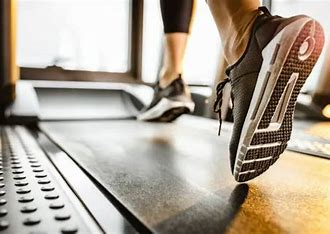

Cardio
Whether you're training for a marathon, burning calories, or just looking for a great workout, our cardio equipment has you covered. From advanced treadmills to high-tech bikes, we provide the tools you need for a healthier lifestyle.
Why Choose Our Cardio Section?
Our cardio machines are maintained to the highest standards and feature advanced technology, such as heart rate monitors, virtual trails, and user-friendly interfaces. No matter your fitness level, we have the right machine for you.
Available Equipment:
- Treadmills with built-in workout programs
- Ellipticals for a low-impact cardio session
- Stationary bikes, including upright and recumbent options
- Rowing machines for a full-body workout
- Stair climbers to strengthen your lower body